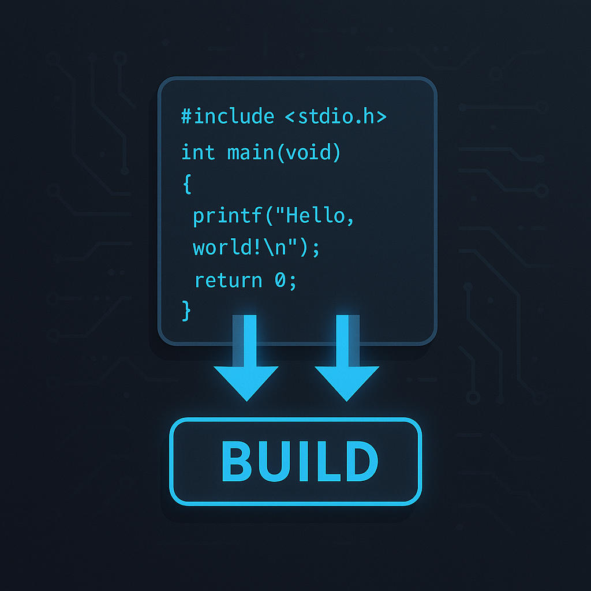

Parser Code Compiler (C)
A C-based compiler project featuring lexical analysis, symbol table management, and assembly-like code generation.
Highlights
- Tokenizer and lexeme table construction
- Scoped symbol table for identifiers
- Assembly-like emission and file I/O